Making and changing Impossible Creatures models in Blender
Edit creatures, other models and maps with Blender, in the IC sidebar tab. Keep your originals.
Getting started and the UI tour
IC Blender opens an Impossible Creatures creature (.sgm) as a patch model. The vertices you edit are the
file's control points, and the surface you see is drawn from them. This chapter installs the add-on and tours it with
the stock rhinoceros, rhinoceros.sgm.
Installing and launching
You need Blender 5.3.0 or newer.
- Open Edit > Preferences > Get Extensions, then the drop-down menu at the top right,
Install from Disk.... Pick
ic_blender-<version>.zip. - Check that IC Blender is ticked under Add-ons. If your game is not in a usual Steam folder, set the Game folder in the add-on's preferences.
- In the 3D viewport press N and open the IC tab.

Importing a stock creature
- Press IC Blender > Import Model, or use File > Import > Impossible Creatures Model
(.sgm / .ebp). Pick
rhinoceros.sgm. Leave Clips as Actions on to get each animation as a Blender Action. - You can pick the
.ebpinstead. Only the model is imported; the motion tree, events and icon stay in the.ebp. - Two objects appear:
Rhinoceros(the control points) andRhinoceros_rig(the armature). - Frame the creature with View > Frame Selected (numpad .).

Gatherers, characters, structures and props use the same button and open as ordinary meshes; see their chapter.
What you are looking at
- Control points: each vertex is one. A shared corner is a single vertex, so the surface stays closed.
- Surface: a live textured overlay that follows your edits and the posed rig.
- Control net: the 4x4 grid of every patch.
- Rig: a Blender armature. Each control point belongs to one bone.
- Clips: Actions on the rig. Edit, rename, add or delete them, and Export writes them.
The Display box:
- Surface Only hides the control points and rig. Turn it off to edit.
- Show Surface, Show Control Net: toggle the overlays.
- Evaluated Surface: real geometry that renders in Eevee and Cycles. Editing is slower with it on.
- Shading menu: Textured, By Limb, By Bone or Plain.
- Surface Density: smoothness of the drawn surface.
- Show Handle Dots: corners gold, handles blue.
- Show Connections: highlights the rings where limbs attach.
- Edit Opacity: surface opacity in Edit Mode.
- Patch Rules (Max feel): a corner drags its handles, and interior points move automatically. Off means raw point editing.
- Show Interior Points: unhides those points.
- Lock Handles: a corner's other handles rotate with the one you move.
- Live Checks: shows warnings while you work.
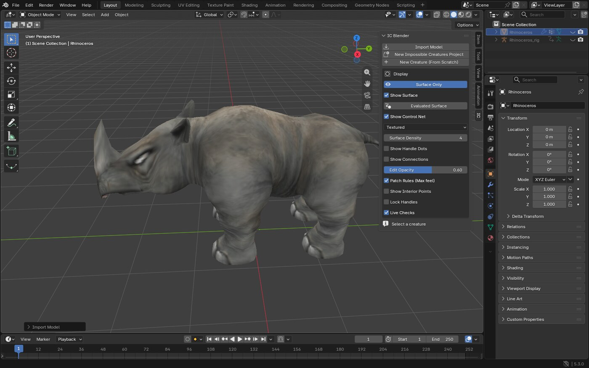
- Press Tab for Edit Mode. The panel adds the Modeling, Topology and Select boxes. A greyed-out button says why in its tooltip.
- Select a point and press G. Box and lasso select, proportional editing (O) and snapping work. X-Mirror Editing is on after import.
- Press 3 to select whole patches.

The IC panel, top to bottom
Below Display, a creature shows:
- Name, control-point and patch counts, and X-Mirror Editing.
- The rig box: Load Animation, the active Action and Select Rig.
- Sculpt: see the sculpting chapter.
- Tools: Attach, Symmetrize (X), Relax Seam Tangents, Retarget Creature to Mesh, Create Landmarks, Landmark Retarget, Trim Stray Surface, Validate (will it load?) and Combine Checks.
- Bake Textured Mesh, Paint Skin, Transfer Texture, Edit UVs, Apply UVs (while a UV cage exists) and Export Model.
- The Boner and Combine Preview sub-panels.
With an ordinary mesh active, Convert Mesh to Creature and Fit Patches to Mesh appear above Display.
Boner: Bones, Limbs, Connections
Boner has the tabs of Relic's Boner tool. With Follow Shading on (the link icon on the Bones tab), the Limbs and Bones tabs switch the shading to match.
- Limbs lists each limb's class, counts and status. A
stublimb has no patches but lets other creatures' parts attach. Click a limb to classify, Rename or Delete it. In Edit Mode use Select Limb and Assign Selected to Limb.

- Bones: choose a Bone (or Pick Bone), rename it, or Add Bone under Active. In Edit Mode use Assign Selected, Select Points and Remove from Bone. Auto Skin gives points their nearest bone. Export refuses patch points with no bone. Joint limits and IK chains are below. Delete or re-parent bones in the rig's Edit Mode.

head bone's points are highlighted.- Connections lists the rings where limbs attach. Use Create for Limb, Rename, Delete and, in Edit Mode, Add Stub Socket. For the active ring set the Parent and Child classes, host bone (Set / Default) and corners (Pick Ring / From Selection). Optimise Start and All Rings pick the best starting corner for combining.

Playing a clip
- Choose Load Animation > walk.
- Press Space or scrub the timeline.
- To edit keys, press Select Rig and open a Dope Sheet or Action Editor.

Validate: three tiers
Validate (will it load?) checks the creature as Export would write it:
- Blocking problems (red) stop the Object Editor loading it.
EXPORT BLOCKEDmeans Export would refuse; the message says why. If you deleted, merged or duplicated vertices, press Ctrl+Z. - STOCK: something every base-game creature has is missing. It still loads.
- WARN: advice about export, limbs or connections.
- COMBINE: combining problems, never blocking. Combine Checks: Quick runs test combines; Off only the instant check.
- Leave Combine Checks on Quick and press Validate (will it load?).
- Read the verdict in the status bar and every line in the Info editor.
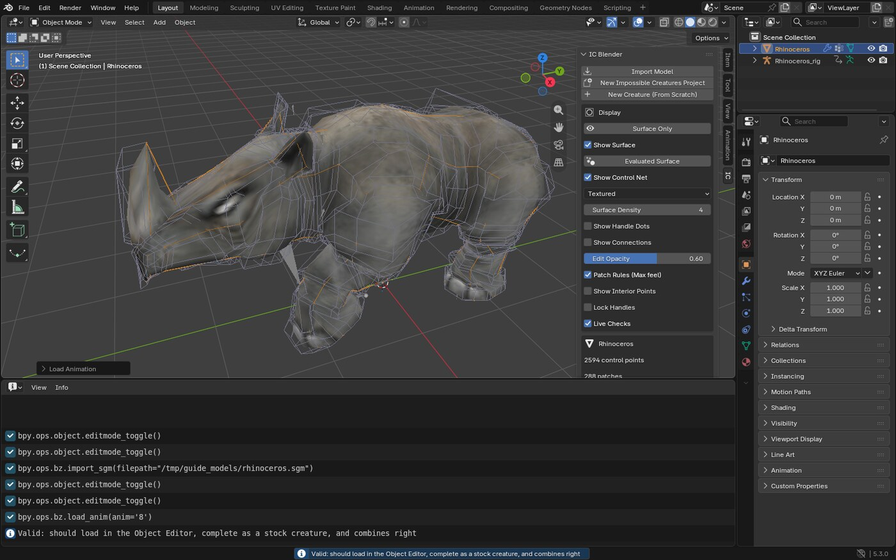
Export: untouched means byte-identical
- Press Export Model, or use File > Export > Impossible Creatures Creature (.sgm). Save somewhere of your own and keep the stock files.

.sgm to write.- Read the report. It lists what changed; an untouched creature comes out identical to its source.

Combine Preview
Open the Combine Preview sub-panel. It combines your creature, unsaved edits included, with another one.
- Choose This Creature Is the Torso or This Creature Donates Parts.
- Choose the other creature: Stock, Object (in this scene) or File.
- Toggle the parts: Head, Tail, Front Legs, Rear Legs, Wings, Front Arms.
- Press Preview. A ghost appears with its stats and warnings; press Refresh after edits. Clear removes it, Materialize… saves it as a creature and imports it, and Validate Combines runs the quick checks.

Bake Textured Mesh
To render in Eevee or Cycles, press Bake Textured Mesh. It makes a textured copy,
Rhinoceros_baked. Posed (redo panel) bakes the current pose. Editing the copy does not
change the creature.

Editing an existing animal
The fastest way to a new creature is to reshape a working one, here rhinoceros.sgm. The object's vertices
are the file's control points, and Export rewrites only what changed.

Into Edit Mode: what the points are
- Import with IC > Import Model, or File > Import > Impossible Creatures Model (.sgm / .ebp).
- Press Tab. Select points as usual: click, box (B), lasso, A.
- Turn on Show Handle Dots: corners (on the surface) are gold, handles blue.
- Each patch's four interior points are hidden and move automatically. Show Interior Points reveals them. Moving one makes its patch manual; Auto Interiors restores it.
- In the Select box, Corners and Handles select one kind of point.
- Press 3 to select whole patches (see Topology).
It edits like an Editable Patch
With Patch Rules (Max feel) on (default), editing works like a 3ds Max or gmax Editable Patch:
- A moved corner brings its handles. A handle moved alone stays where you put it.
- Set Coplanar keeps a corner's handles in one plane; Set Corner frees them.
- Lock Handles rotates a corner's other handles with the one you move.
- Turn Patch Rules off to place single points exactly.
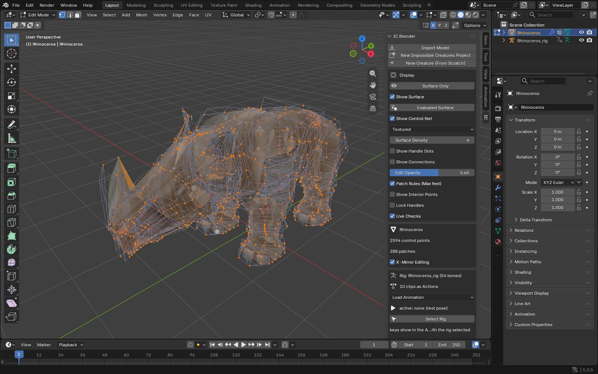
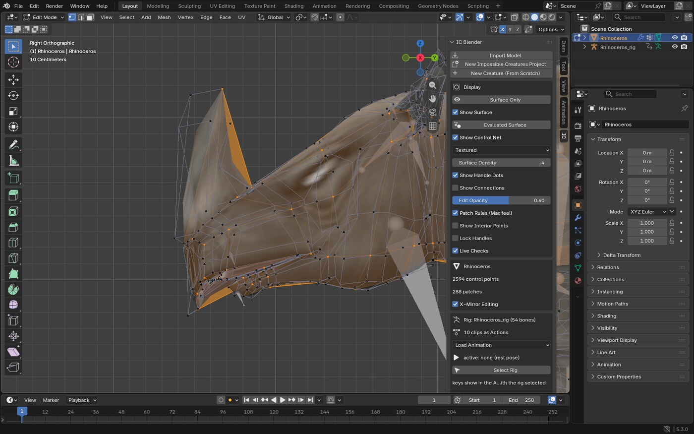

Moving points: lengthen the horn
To move a whole feature, select its corners and the handles around them.
- View from the right (Numpad 3) and box select the horn tip.
- Press G and move. For an exact move, type G Z 0.45 Enter.
- Press Export Model at any time. The report counts the re-encoded points, including those the patch rules moved.

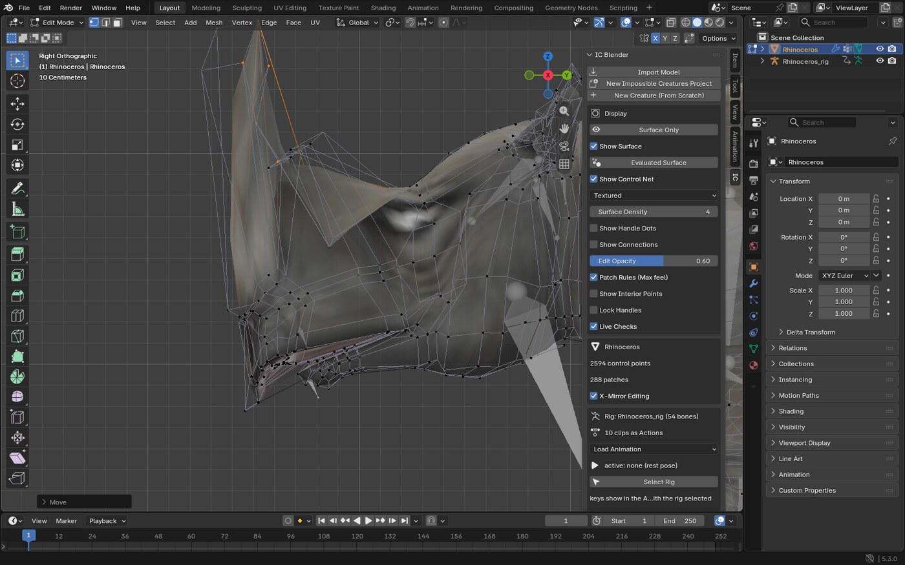

Undo, also across Tab
Ctrl+Z works in both modes and across the mode switch. Ctrl+Shift+Z redoes.

Symmetry: Symmetrize (X) and X-Mirror
Tools > Symmetrize (X) averages each mirror pair into exact symmetry and puts centre points on X = 0.

X-Mirror Editing is on from import but only finds exact mirror partners. Run Symmetrize first; asymmetric edits break the pairs again. The dependable way is to select both sides:
- Select the points on one side, such as the left ear.
- Use Select > Select Mirror (Shift+Ctrl+M) with Extend on.
- Move both, for example G Z 0.3 Enter.


Proportional editing: raise the back
Select the top corner on the back, press O, then G Z 0.35 Enter. Scroll during the move to change the radius. Press O again before precise moves.
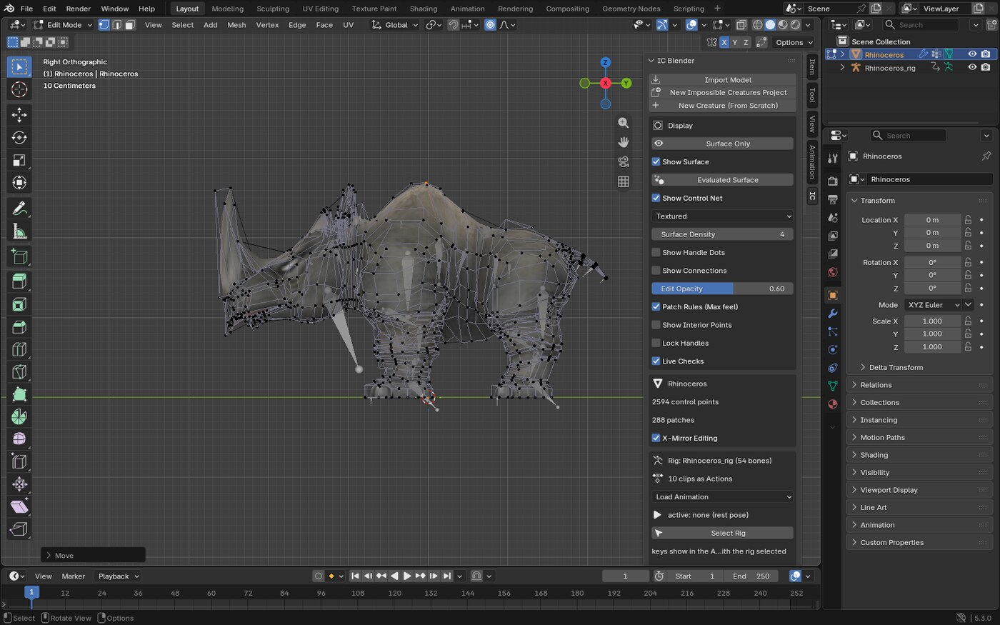
Relax Seam Tangents
Tools > Relax Seam Tangents smooths the creases between patches without moving the seams. It treats all seams, or only a seam whose four points you select. Repeat for more effect.
Extrude Patch: growing geometry
Modeling > Extrude Patch grows one patch from an open side (used by only one patch). Select that side's two corners, or all four corners of a patch with one open side. Stock creatures are closed, so delete a patch first. For more tools see Topology.
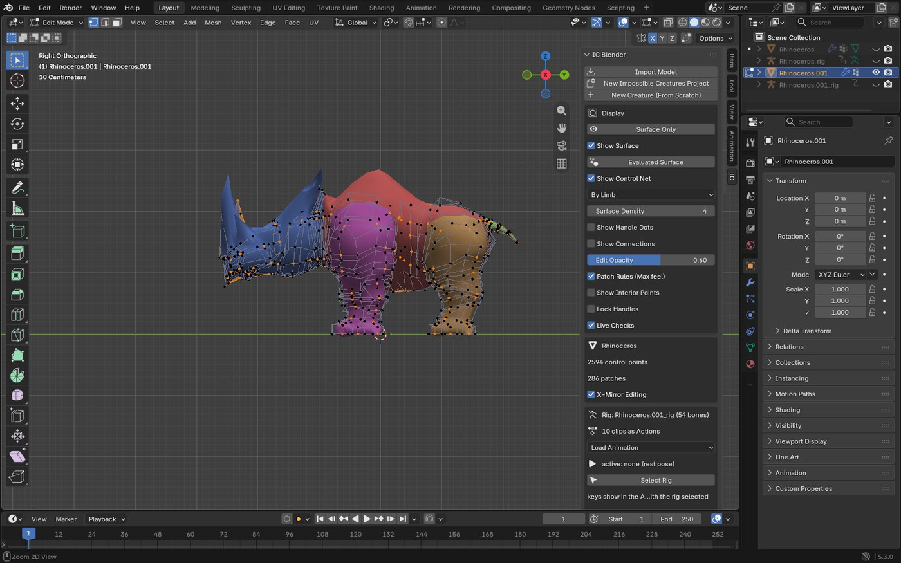

Validate: will it load?
Tools > Validate (will it load?) checks what Export would write. See the status bar and Info editor.
- No prefix (blocks loading): open or over-shared edges, more than 12,288 display vertices, patch points with no bone, or EXPORT BLOCKED (read the reason; undo any vertex Delete, Merge or Duplicate).
- STOCK: standard clips, bones, rings or IK chains are missing. It loads, but may behave differently.
- WARN: advice. A clip bounds warning means a reshaped creature could vanish at the screen edge; edit or re-key each clip to update it.
- COMBINE: results from Combine Checks, never blocking.
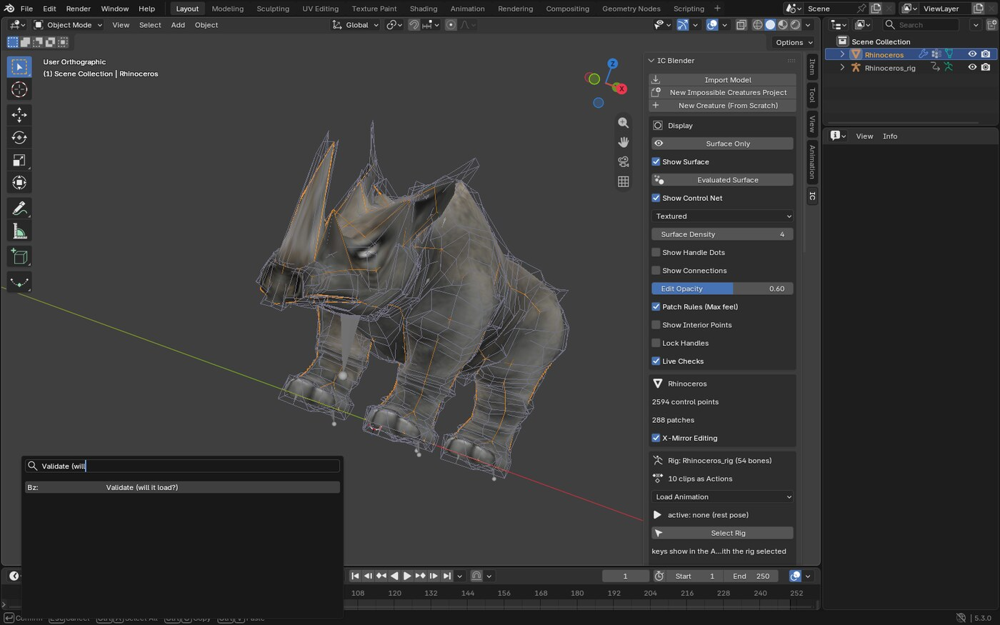

Export and the export summary
- Press Export Model and save outside the stock folder.
- Read the report. It names only what changed: geometry, rest pose, rings, textures or clips.
- An untouched creature reports no edits; byte-identical to the source.


Topology: making geometry, not just moving it
These tools add, remove and join patches. They are in the Modeling, Topology (Edit
Mode) and Tools boxes. The examples use cheetah.sgm.
The rule: two patches are joined only when they share all four control points of a side. A side used by one patch is open, and the Object Editor will not load it. Corners in the same place must still be welded.
Patches are selectable
- Press Tab, then 3.
- Click a patch. Box, lasso, circle, Select Linked and Grow / Shrink work too. Alt+Z selects through the body.
- H hides patches, Shift+H hides the unselected, Alt+H unhides.
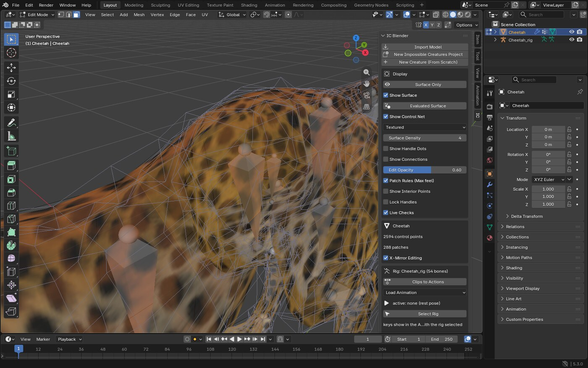
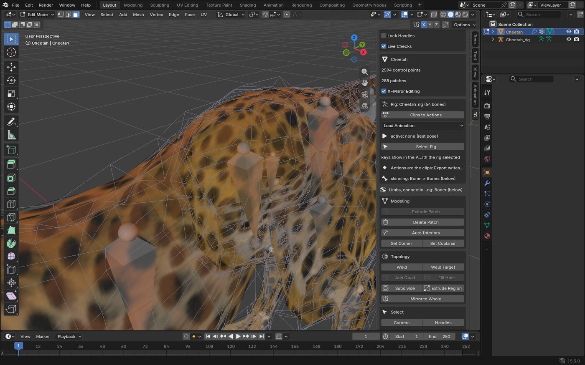
Delete Patch and Fill Hole
- Select the patches.
- Use Modeling > Delete Patch or X > Patches. A patch on a connection ring is refused.
- Close the hole, or Validate blocks it.
- Use Topology > Fill Hole. With several holes, select a corner of one first. A hole needs an even number of sides, at least four.


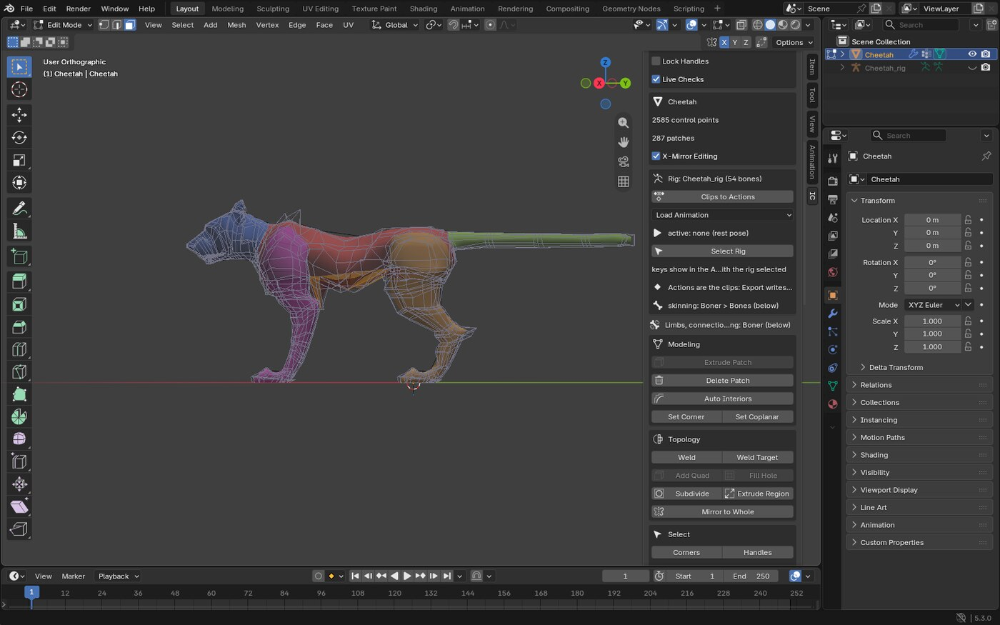
Add Quad and Weld
Add Quad grows a patch on each selected open side. To close a gap, move the new corners into place and Weld.
- Select an open side and press Topology > Add Quad.
- Move the two free corners onto the far corners of the hole.
- Select all four and press Weld. Threshold 0 means 1 % of the creature's size. Weld Target merges into the active corner instead.
- Welding two open sides also merges their handles, which closes the seam.
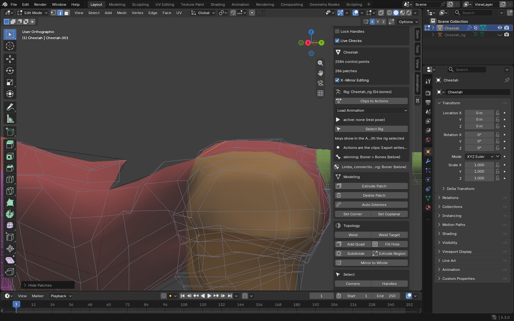

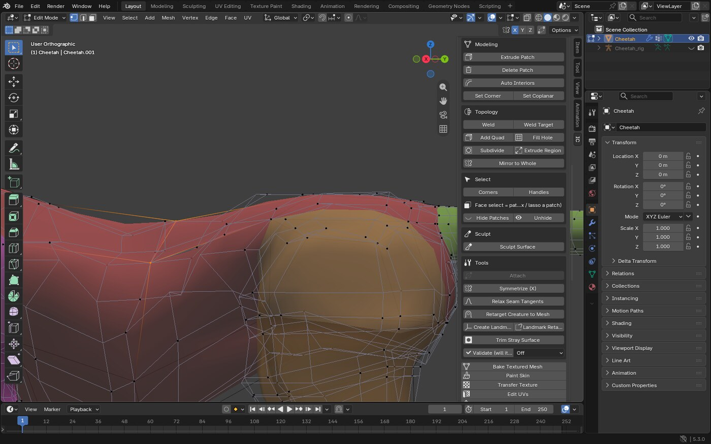

Subdivide: more patches where you need them
Subdivide splits each selected patch into four without changing the shape. The split carries on through neighbouring patches so no gaps form.


Extrude Region
Extrude Region lifts the selected patches and builds walls around them. In the redo panel set Amount (height) and Outline (scale of the top), or press G to move the lifted points. To drag at once, search for Extrude Region (Drag) (needs Developer Extras).


Mirror to Whole
Mirror to Whole builds the other half from one half. It mirrors the selected patches (or all) across X = 0, joins the centre seam, and uses the matching left or right bones and limbs. Snap Seam to Plane (on by default) puts seam points on X = 0.
- Delete the connections whose rings reach into the unwanted half, then delete that half's patches.
- Deselect everything and press Topology > Mirror to Whole.


Attach: two creatures into one
In Object Mode, select the other creature, make yours active and press Tools > Attach. Choose the Limb and Bone for the new parts.
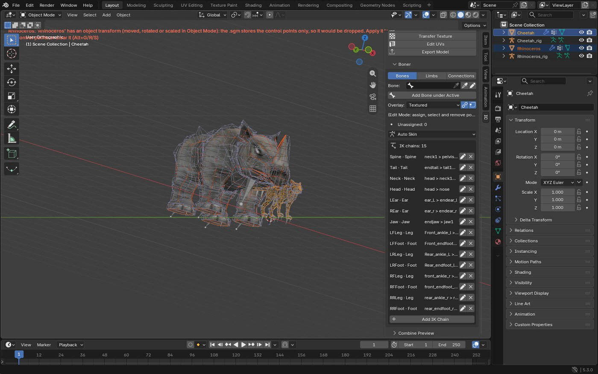

What it costs: the display-vertex ceiling
The game limits a patch mesh to 12,288 display vertices. A patch costs about 16 where its seams weld and 25 where it has its own texture island.
- Combining adds donor limbs to the same mesh. To stay safe, use at most 6,584 for the torso and 7,879 for the limbs.
- Validate reports your real count; patch count alone does not tell you.
- Attach refuses to exceed 767 patches.
Sculpting: brushes instead of control points
Shape a creature with Sculpt Mode brushes, then fit the result back into its patches. Everything else stays, and
untouched patches keep their exact points. The example is cheetah.sgm.

Sculpt Surface
- In the Sculpt box press Sculpt Surface.
- Set Density in the redo panel (F9; 4–12, default 7). Higher gives finer vertices, not finer patches.
- A joined mesh named
<creature>_sculptis made, so brushes do not tear the seams. - The creature and rig are hidden and Sculpt Mode starts.
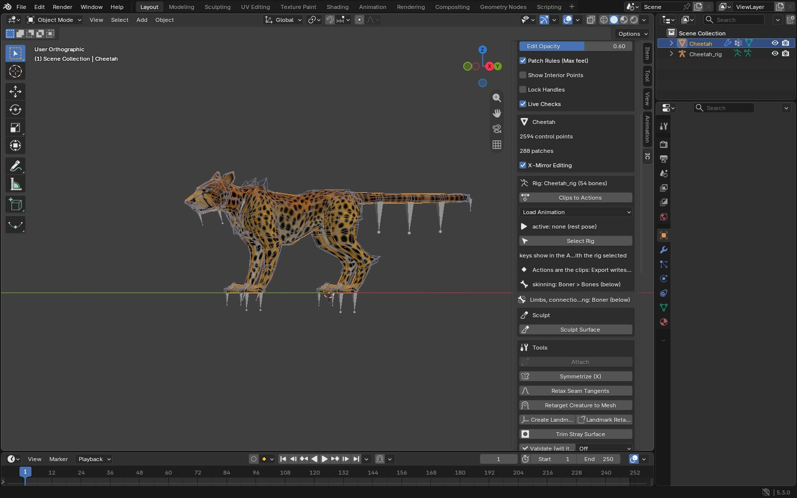

Sculpt it
Use any brush or mask that only moves vertices.
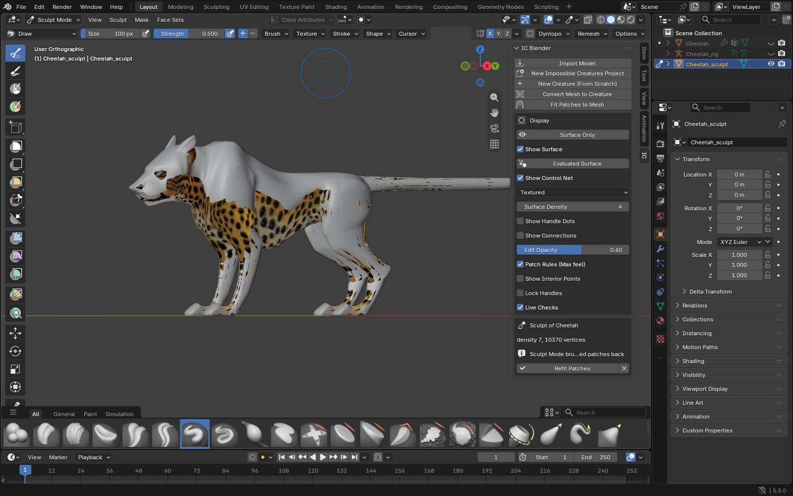
Refit Patches
- Press Refit Patches.
- Only patches you changed are refitted.
- Check the residual in the report: the detail the patches could not hold.
- One Ctrl+Z undoes it. The sculpt mesh is removed unless Keep Sculpt Mesh (redo panel) is on.
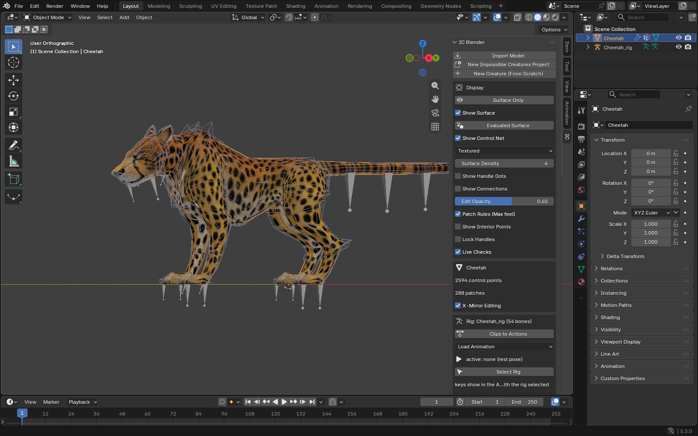
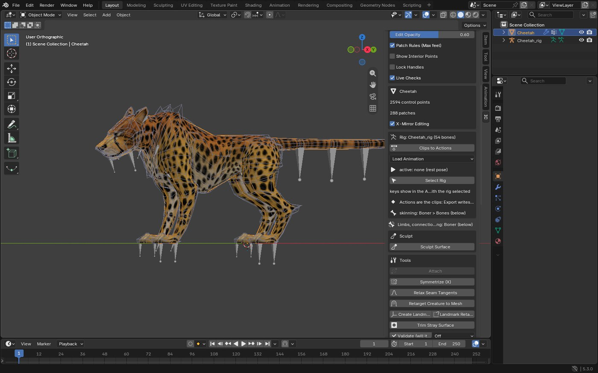
Reading the residual
Broad changes fit closely. Scales, wrinkles and sharp creases come out smoother. Either subdivide those patches first (see Topology) or paint the detail (see Textures).
Making an animal from scratch: a rhino
This chapter builds a crude rhino: start a creature, shape it, add a horn bone, check limbs and skin, animate, combine and export.
What the scaffold gives you
New Creature (From Scratch) writes a complete creature to the .sgm you choose and imports
it. At Detail 1 it has:
- a 48-bone skeleton;
- a closed body of 248 patches with torso, head, tail and four legs;
- 13 limbs (wings and front arms are empty stubs) and 12 connection rings;
- a labelled checker texture;
- the 9 standard clips and the base-game IK chains.
The options are Name, Detail 1–3 (1 is coarsest), Standard Clips, IK Chains and Clips as Actions.
1. New Creature (From Scratch)
- Press N and open the IC tab.
- Click IC Blender > New Creature (From Scratch), or Add > Impossible Creatures Creature (From Scratch).
- Set Name to
Rhino, keep Detail 1, save asrhino.sgm. - Set the shading to By Limb and tick Show Connections.

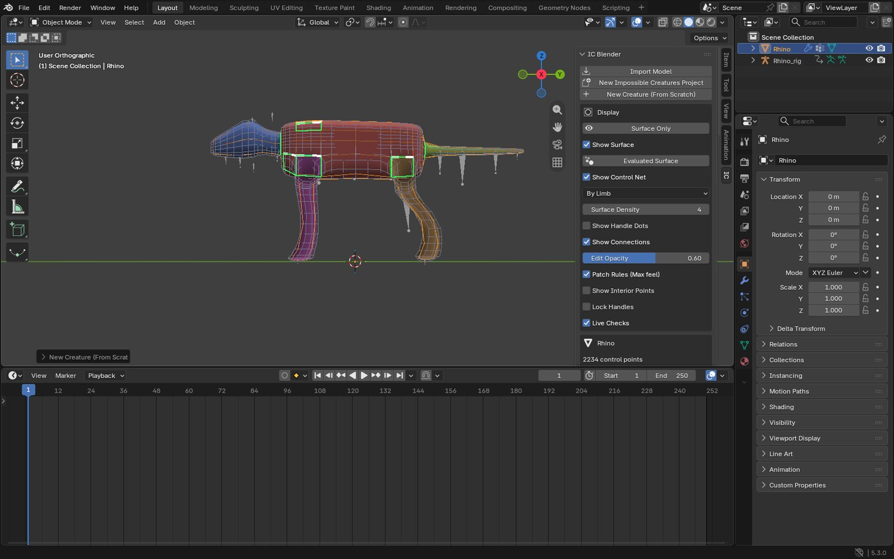
2. Shape it in Edit Mode
Dragging shared points keeps the surface closed. X-Mirror Editing is on.
- Press Tab and tick Show Handle Dots.
- Move with G and scale with S. Boner > Limbs > Select Limb selects a body part; proportional editing (O) keeps it smooth.
- For a rhino, make it lower and wider, enlarge and lower the head, shorten the tail and thicken the legs.
- Press Tab to check the shape.


3. A horn: pull it out, give it a bone, skin it
Extrude Patch needs an open side and the scaffold is closed, so pull the horn from existing points.
- In Edit Mode select the top-front points of the head.
- Press G and drag them forward and up. Keep them selected.
- In Object Mode, set Boner > Bones > Bone to
head(or use Pick Bone). Click Add Bone under Active, set Namehorn, an Offset and a Length such as 0.25 m. - Press Tab and click Assign Selected.


horn bone, with no points yet.
horn.4. Limbs and connections
The scaffold already has these, so just check them in Boner.
- Limbs lists each limb's class, patches, bones and status.
- Click a limb to see its Side / Position / Plane / Type / Non-Swappable settings and bones, with Select Bones, Set Root Bone, Add Active Bone and Remove Active Bone.
- Click Rename and enter
Rhino_HornedHead. Combining uses a limb's class, not its name. - Connections lists the rings. With Show Connections on, click a row to highlight it.

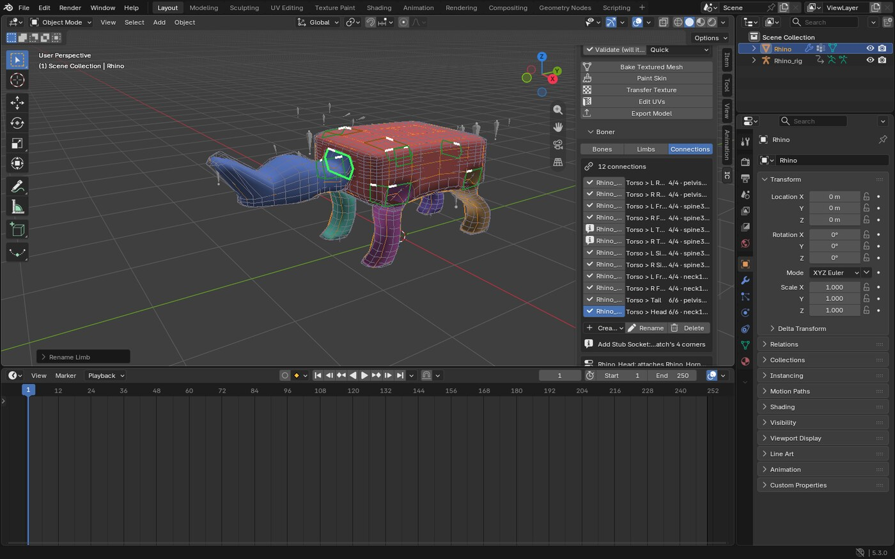
5. Skinning: is every point on a bone?
The scaffold is fully skinned. Export refuses patch points that have no bone.
- Use By Bone shading; points with no bone are orange.
- In Edit Mode click Select next to Unassigned.
- Click Assign Selected, or Auto Skin > Selected, else Unassigned. Auto Skin > Reset All replaces the whole skin, so check the result. Remove from Bone unassigns.
6. Animation
- Choose Load Animation > Idle1 and press Space.
- See the keys in a Dope Sheet with Only Show Selected off, or click Select Rig and use the Action Editor.
- For a new clip, select the rig, create an Action named
headbob, enter Pose Mode (Ctrl+Tab) and key the rotation ofneck2,neck3andheadat frames 1, 11 and 21, head down at 11. - Export adds it as a new clip.


headbob clip.7. Validate, Combine Preview, Export
- Press Validate (will it load?) with Combine Checks on Quick. Two warnings are
expected and do not block: old clip bounds, and no
.luafile (a combine keeping these legs gets zero ground speed). - In Combine Preview choose This Creature Is the Torso, Stock,
bull, tick only Head and click Preview. - Click Export Model and save as
rhino_done.sgm.


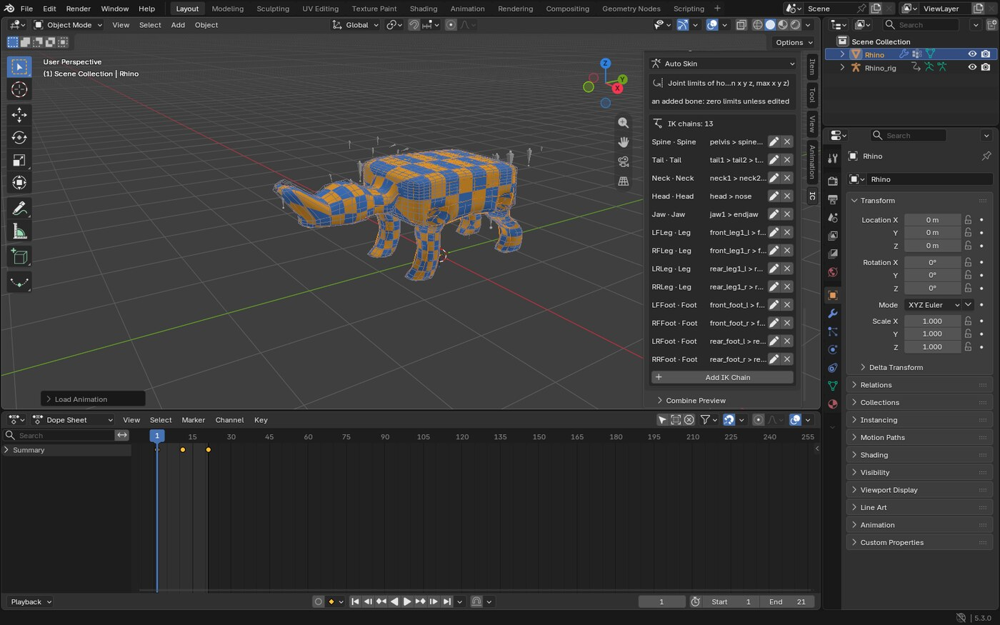
8. Prove it loads
Open rhino_done.sgm in the game's Object Editor. To play it, the creature also needs .ebp,
.lua and .lsc files.
Fitting a mesh: an outside model becomes a creature
Fit Patches to Mesh turns an ordinary mesh (sculpt, scan, .glb, .obj) into
a patch creature. It borrows a template creature's skeleton and materials, writes a .sgm and imports it. The
example is Suzanne, without eyes and subdivided twice.

What the fit will accept
- The mesh must be one closed skin.
- Vertices split at seams (usual in glTF) are fine; the fit welds a copy first.
- Separate shells, such as eyes or a detached limb, are refused. Delete or hide them.
- Your mesh is not changed.
Running the fit
- Select the mesh.
- Press Fit Patches to Mesh and set the redo panel (F9):
- Patch Budget (300): target number of patches.
- Layout: QuadriFlow remeshes a copy; Own Quads uses your faces.
- Seam Smoothness (0.02): keep it small.
- Iterations (10): fitting rounds.
- Skeleton Template (.sgm): the creature to borrow from.
- Output .sgm: where to save.
- Error Heat Map and Split into Limbs: on by default.
- Wait, about half a minute for 300 patches and longer for more.
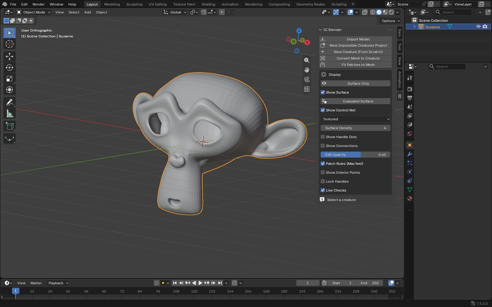

The report gives the fit error (rms, p95, max) and whether symmetry was kept.

To see the heat map, set Viewport Shading > Color to Attribute.
The budget, and the ceiling it is measured against
More patches follow the mesh better but take longer. The game limits a creature to 12,288 display vertices, at 16 per patch where seams weld and 25 with its own texture island (as Transfer Texture makes).
| Budget | Result |
|---|---|
| ≤ 263 | safe to combine with stock creatures |
| 264 – 491 | warning: loads, but combining may fail |
| 492 – 767 | strong warning: loads only if seams weld |
| > 767 | refused |
Fit to rig: the creature is riggable at once
- Split into Limbs shares patches and points among the template's limbs and bones.
- Without it everything goes in the Torso, other bones become stubs, and bone tools refuse them.
- Bones are not moved. Move them before animating, in Boner > Bones or by retargeting.

A mesh at creature scale
Small meshes are fine: the fit scales a copy up for QuadriFlow when needed.
After the fit
- Run Validate (will it load?).
- Move bones and fix skinning in Boner > Bones.
- Place the sockets in Boner > Connections.
- Copy a textured source's skin with Transfer Texture (see Textures).
- If the template left extra surface, use Trim Stray Surface (see Retargeting).
Retargeting: an existing creature takes another shape
Retargeting keeps a working creature (patches, limbs, rings, skeleton, skin, clips) and reshapes its surface to match a target mesh. The tools are in the Tools box.
| Tool | Use it when |
|---|---|
| Retarget Creature to Mesh | the target is a similar shape |
| Create Landmarks + Landmark Retarget | parts must move across the body |
| Trim Stray Surface | the target lacks a part the creature has |
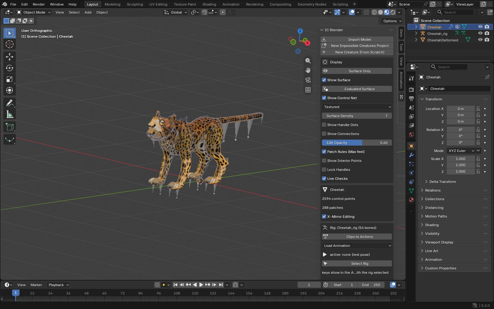
Retarget Creature to Mesh
- Add the target mesh: one closed skin (split seams are fine).
- Select the creature, press Tools > Retarget Creature to Mesh and pick the Target Mesh.

- Pin Rings (on): sockets stay put. Off may cause combine warnings.
- Scale to Target (on): aligns and resizes the target to the creature.
- Keep Symmetry (on): keeps a symmetric creature symmetric.
- Move Bones (on): bones follow the surface.
- Seam Smoothness (0): leave at 0 to keep stock-style seams.

One Undo restores points and bones.
The limit a closest-point fit has
Create Landmarks and Landmark Retarget
- Press Create Landmarks. It adds Empties named
LM_<name>for limb tips, limb roots and the torso. - Drag each onto the matching place on the target. An Empty can also be named after a bone
(
LM_endfeeler_l). - Press Landmark Retarget. It warps surface and bones to the landmarks, then fits.

- Warp Smoothing (0.001): 0 hits every landmark exactly.
- Warp Rings (on): sockets follow the warp.
- Other options are as above.

Check coverage by limb in the report: it warns which limbs still miss the target.
Trim Stray Surface
Retargeting ignores creature surface with no target under it. Trim Stray Surface finds it.

A patch is stray when at least Stray Fraction (half) of it lies farther than Stray Distance (2 % of size) from the target. The target defaults to the last fit or retarget mesh. Choose an action:
- Select (default): only selects the stray patches.
- Delete: removes them and fills the holes it can. Ring patches are refused. Undo takes one step per edit; check for open sides.
- Collapse onto Target: folds them onto the body without changing the patches. Best for an unwanted limb. Keep the Shared Edge (on) leaves well-fitting neighbours still.


Validate also warns about stray patches (WARN trim).
Skinning and re-skinning
Skinning decides which bone moves each control point. The tools are in the IC tab under
Boner > Bones. The examples use the stock rhinoceros.sgm.
The model: one bone per point, no weights
- Each control point follows exactly one bone. There are no blended weights.
- In Blender each bone has a vertex group, used at weight 1.0.
- Every point a patch uses needs a bone, or Export refuses.
Seeing the skin: By Bone
- Import the rhinoceros (IC Blender > Import Model) and open the sidebar (N) on the IC tab.
- Open Boner and choose the Bones tab.
- Set Overlay to By Bone. Points take their bone's colour; points with no bone are orange.
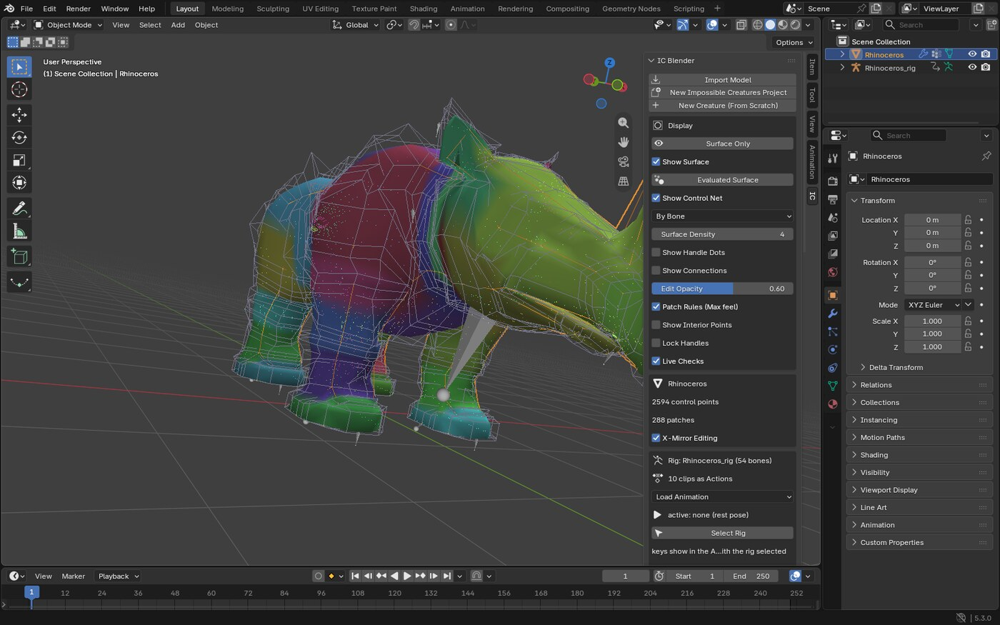
- Pick a bone in the Bone field (here
head). Its points turn bright, the others dim, and the tab shows its point count and parent.

head, stands out.Selecting a bone's points, and Pick Bone
- Press Tab for Edit Mode. Assign Selected, Select Points and Remove from Bone appear on the tab.
- Press Select Points to select the active bone's points. Extend, in the redo panel, adds to the selection.

- To find a point's bone, press the eyedropper (Pick Bone). Hover a point or rig bone to see the name in the viewport header. Click to make it active, or press Esc to cancel. You can orbit while picking.
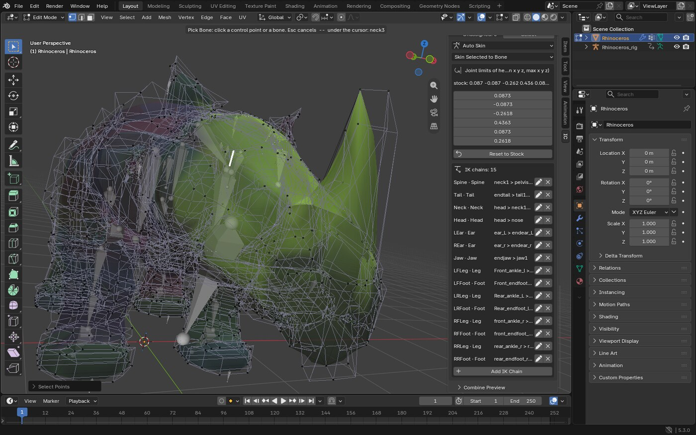
Moving points to a neighbouring bone
To see the skin bend, press Select Rig, enter Pose Mode and rotate head
(R).
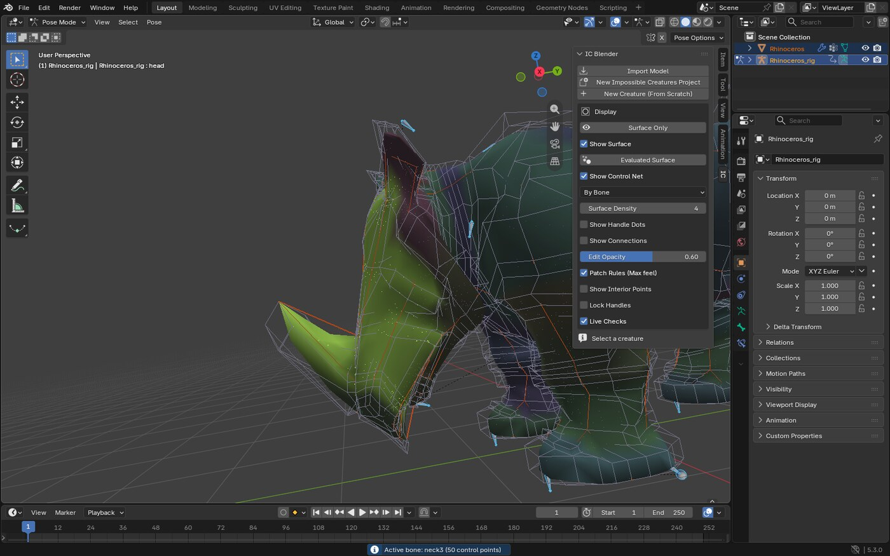
- Reset the pose (Alt+R), select the creature and enter Edit Mode.
- Select the points to move (here 20 lower-neck points of
neck3). - Make
headthe active bone and press Assign Selected. Or use Skin Selected to Bone, under Auto Skin, and choose the bone from a list.

head.- Pose the head again: the moved points now swing with it. Ctrl+Z undoes an assignment.

Taking points off a bone: Remove from Bone, Select Unassigned, and the export refusal
- Make
ear_Lactive, press Select Points, then Remove from Bone. The points turn orange and Unassigned turns red. Selected points of other bones are left alone.
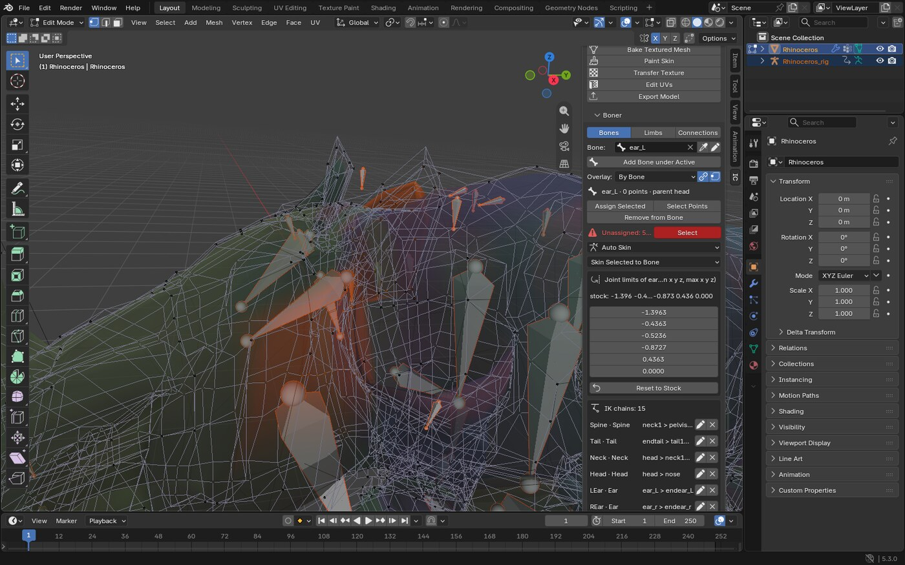
- Export Model now writes nothing, and Validate (will it load?) reports that export is blocked.
- Press Select next to the Unassigned count (Select Unassigned). Then assign the points to a bone, or run Auto Skin.

Auto Skin
Auto Skin gives each point its nearest bone. Choose which points:
- Selected, else Unassigned (default): the selected points in Edit Mode. With none selected, or in Object Mode, every unassigned point.
- Selected (Edit Mode only).
- Unassigned.
- Reset All: every point, replacing the current skin.
It skips stub bones (wing and arm sockets), end bones (names such as endjaw) and bones with Deform off.
Keep Handles Follow Corners (redo panel) on: otherwise patches can bend differently in battle.
- With the ear points still selected, run Auto Skin > Selected, else Unassigned. Check the result with By Bone.
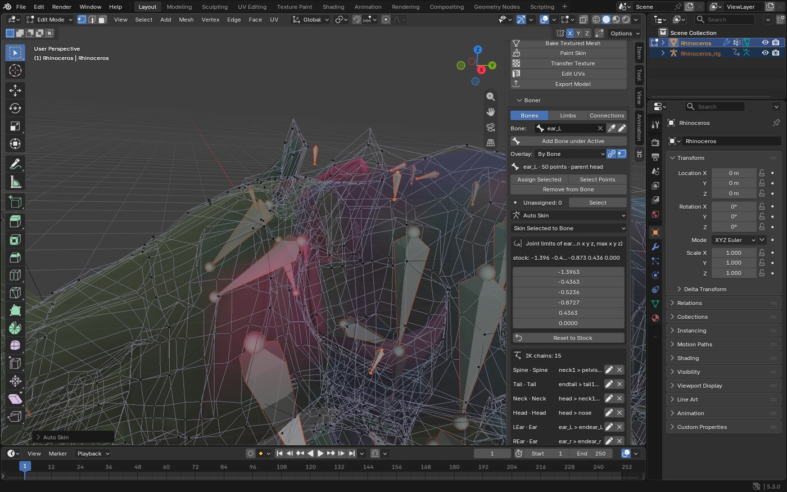
- Reset All re-skins the whole creature. It matches only about half of a stock skin, so fix seams by hand. With every point selected, the two "Selected" choices refuse.

Blender's own way: vertex groups and weight painting
Blender's vertex-group tools work too, if each point ends up in one bone group at weight 1.0.
- In Edit Mode, select points. Remove them from the old group and assign them to the new one at weight 1.0 (Object Data properties, or Ctrl+G > Assign to Active Group).
- By Bone shows the new owner at once, and Export keeps the change.
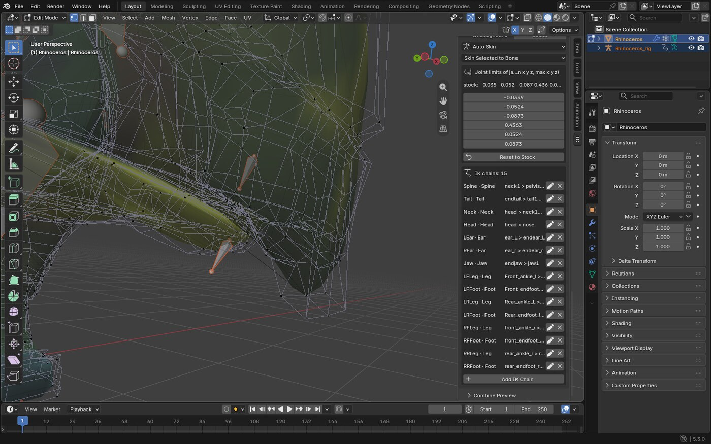
- A point in two groups, at partial weight or in no bone group can't be exported. Other skin edits stop too.
- Press Ctrl+Z, or select the point and press Assign Selected. Select Unassigned finds points in no group.
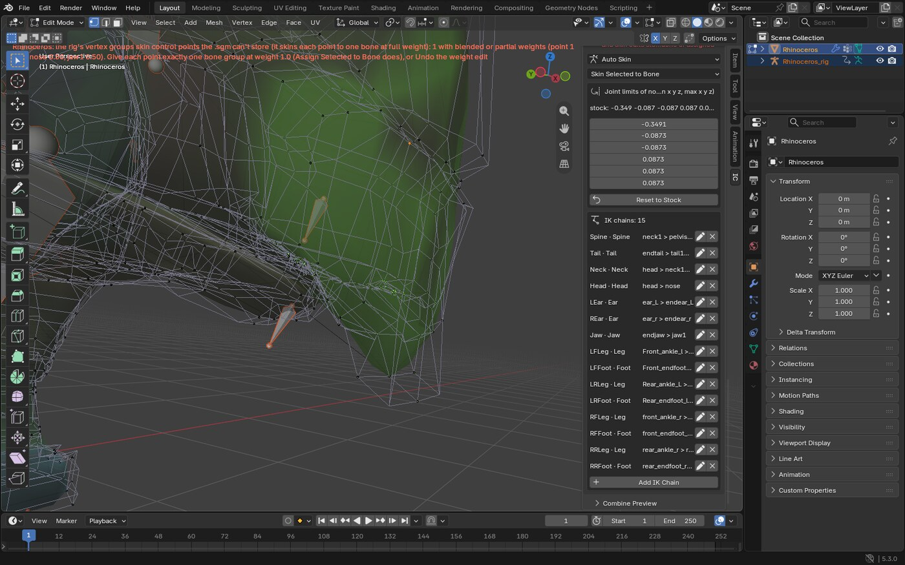
Export: the summary line
Press Export Model. The report names what changed, for example
skinning: 35 bone range(s) rebuilt. A high count is normal after a small edit. An untouched creature
reports byte-identical to the source.
Skinning and combining (ComboTest)
The combiner moves a limb by its bone list. Skin a limb's patch points only to:
- the limb's own bones;
pelvis,spine1,spine2,spine3,neck1ortail1;- its connection's host bone.
Warnings:
- Other points go to the root bone when the limb is grafted (for a leg, ComboTest.exe fails). Re-skin them, or add their bone to the limb (Boner > Limbs > Add Active Bone).
- Don't skin points to a stub bone, and don't leave a connection's host bone without points.
- Validate reports these as STOCK lines. Export still works, but the creature won't combine like a stock one.
Re-texturing and texturing from scratch
Paint a creature's textures or move its UVs, then export. The examples use the stock
rhinoceros.sgm.
How textures live in the .sgm
- Textures are inside the
.sgm. Import makes each a Blender image namedSGM_<file>. - Keep sizes powers of two. A texture holds at most 256 colours.
- Each patch uses one material, and each material names a texture.
- Pure magenta (255, 0, 255) is transparent in game.
Seeing the textures: the live overlay
- Use IC Blender > Import Model and pick
rhinoceros.sgm. - The shading selector in Display starts on Textured.
- Choose Plain, By Limb or By Bone to check shape or ownership.


To view a texture, open an Image Editor and pick its SGM_… image.

Paint Skin: repainting a texture
- With the creature active, press IC Blender > Paint Skin. It makes a
<creature>_bakedmesh and enters Texture Paint. - Paint on the mesh, or in the Image Editor in Paint mode. Use pure magenta for transparency.
- Return to Object Mode. The baked mesh is only for painting and is never exported.


Export: only painted textures are re-encoded
- Select the creature, then press IC Blender > Export Model.
- The report lists what changed, for example
textures: 1 edited (rhino02.bmp: 3812 texels).
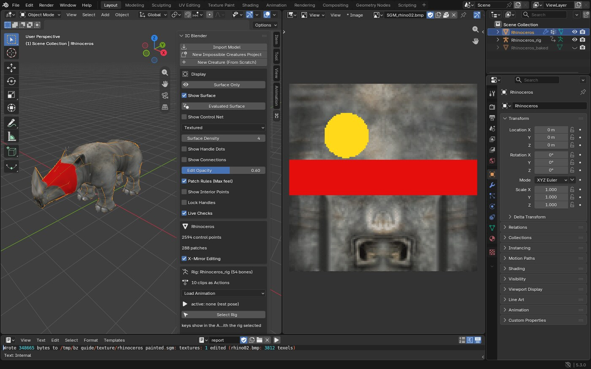
Unpainted textures are unchanged. A painted one keeps its palette where possible. An image whose size changed gets a new palette.
UV editing: the UV cage
Each patch has one UV point per corner.
- With the creature active, press IC Blender > Edit UVs. It makes a
<creature>_UVcagemesh with one quad per patch. - In Edit Mode on the cage, select faces and open the UV Editor. Pick the texture, then move, rotate or scale the UVs.
- Return to Object Mode, select the creature and press Apply UVs. This is optional before Export, which reads the cage too.
- Export reports the changed patches, for example
UVs: 62 patches.


Texturing from scratch
You can't add materials or textures by hand, so start from a creature with the slots you need.
- Press IC Blender > New Creature (From Scratch). Set Name, keep
Standard Clips, IK Chains and Clips as Actions on, and choose
where to save the
.sgm. - It has one 256x256 checker texture,
<name>01.bmp, on every slot. - Paint over it with Paint Skin.

To use your own PNG, copy its pixels into the creature's image; a newly opened image isn't exported.
- Use Image > Open in an Image Editor.
- Resize it to match the creature's image (Image > Resize).
- In the Python Console:
src = bpy.data.images["skin.png"]; dst = bpy.data.images["SGM_guidezilla01.bmp"]; dst.pixels = src.pixels[:] - Export. Only colour is exported, so use magenta for transparency.


Transfer Texture: a source mesh's own skin
A fitted or retargeted creature wears the template's skin. Transfer Texture gives it the source mesh's skin, with no unwrapping. The source needs a UV layer and an image texture.
- Keep the textured source mesh in the file.
- Select the creature and press Transfer Texture. It uses the mesh that Fit or Retarget recorded. To use another, change Source Mesh in the redo panel.
- It bakes the source onto one new texture, with a separate square for each patch.
- All materials now use that texture. Export writes it.

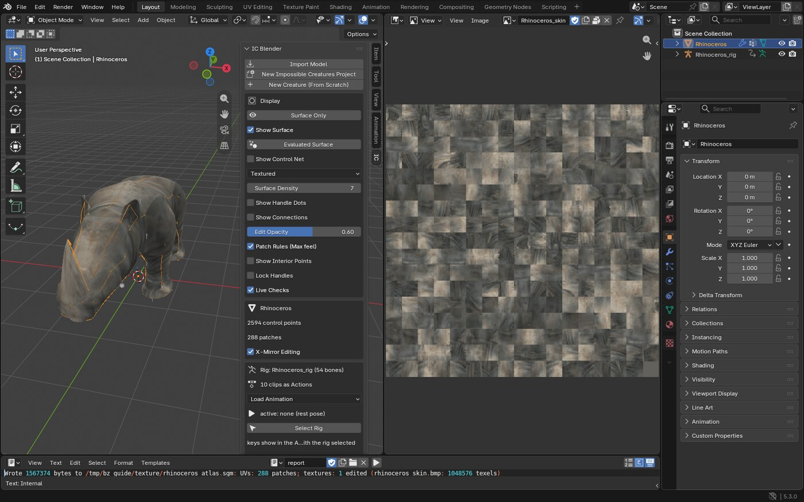
- With no recorded mesh it stops with Choose a source mesh, and the button offers no field to choose one.
- Low source coverage means parts of the creature found no source and took nearby colours. Raise Ray Distance.
- Size is 256, 512, 1024 (default) or 2048. Large textures are untested in game.
- The most patches a creature can load with drops from about 760 to about 490, and the combine budget by about a third. Check with Validate.
- Reflection and specular textures are dropped, with a warning.
- It refuses during a sculpt. A patch creature can't be the source: use its Bake Textured Mesh result.
Refusals and gotchas
- Missing image. Don't delete
SGM_…images: Export refuses. Undo or re-import. - Old UV cage. After Extrude Patch, press Edit UVs to rebuild it.
- Modifiers and transforms. Extra modifiers, shape keys or an object transform block Export. Apply or remove modifiers; clear transforms with Alt+G / R / S.
- Wrong object. With the baked mesh or UV cage active there's no Export button.
- Soft brushes. Only exact magenta is transparent; soft edges leave near-magenta fringes that show.
- Hidden creatures still draw. Exclude their collection, or delete them.
- Saving the .blend. Don't unpack or purge the skin images.
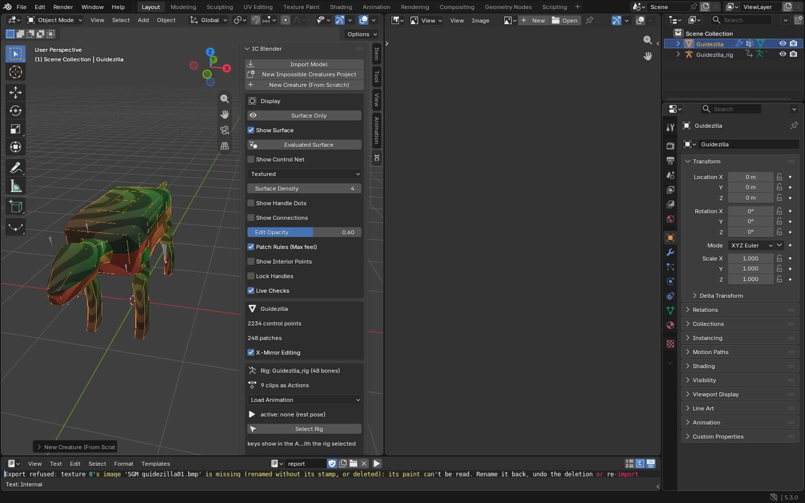
Playing, editing and creating animations
Each clip in a creature's .sgm (Idle1, walk, Melee1 and so on) becomes a
Blender Action. Edit it with Blender's tools; Export Model writes it back.
What import gives you: one Action per clip
With Clips as Actions on (default), each clip is an Action on the rig, with its own muted NLA track.
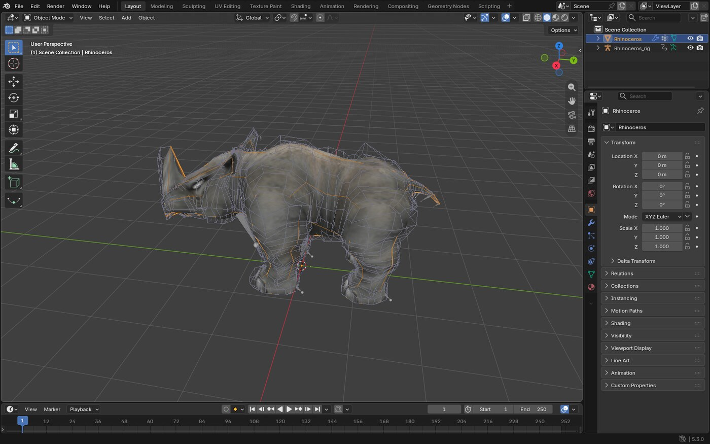
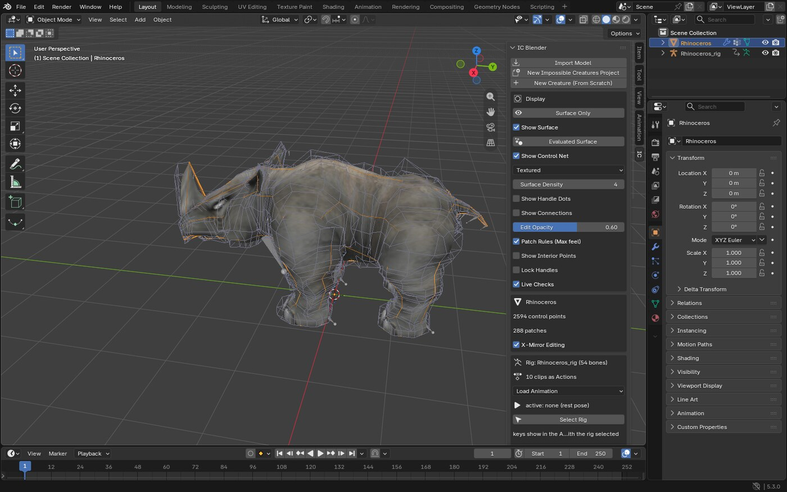

Playing and scrubbing a clip
- Select the creature and pick a clip from Load Animation in the IC tab. The frame range and rate follow the clip.
- Press Space to play, or drag the Timeline playhead.
- Switch clips any time, there or in the Action Editor with the rig selected.
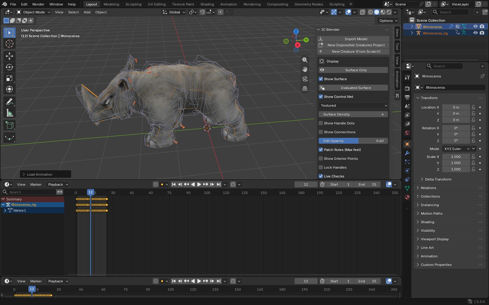
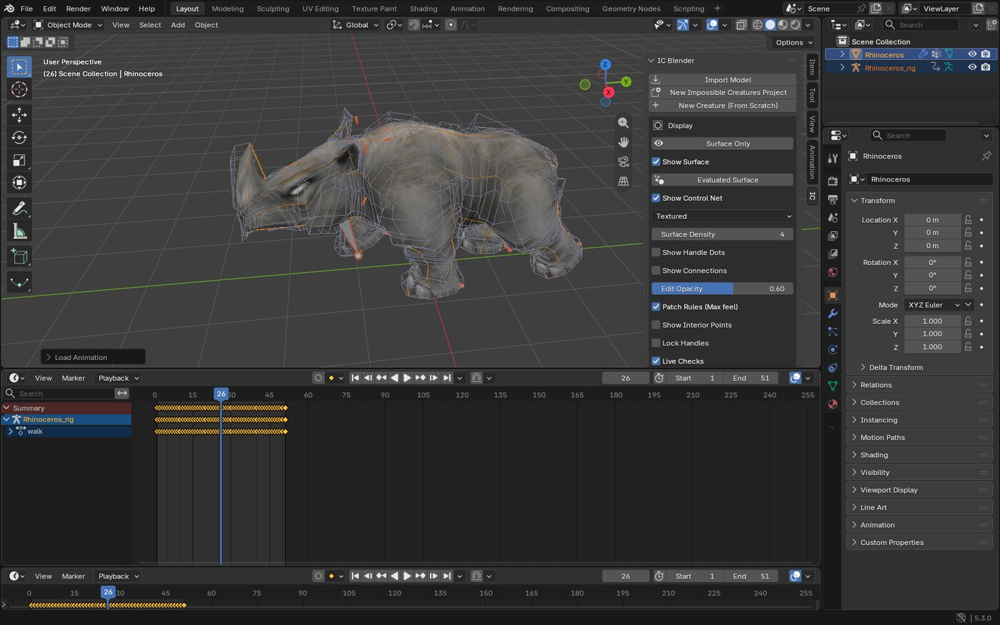
Editing a clip in the Dope Sheet or Graph Editor
The Actions belong to the rig, so select it first.
- Press Select Rig. Select the creature again when you want to edit geometry.
- Open a Dope Sheet in Action Editor mode, or the Graph Editor.
- In Pose Mode (Ctrl+Tab), go to a frame, pose a bone and key it with I. Auto Keying works too.

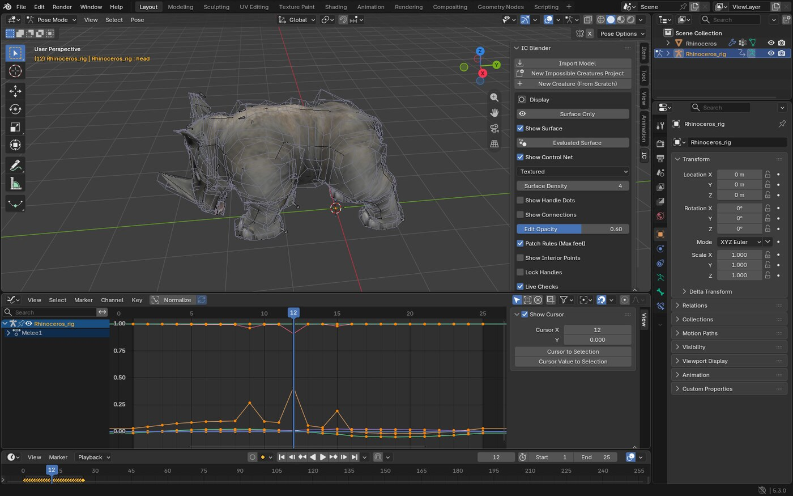
Export: untouched clips keep their bytes, edited ones are re-encoded
- Select the creature and press Export Model. Save under a new name, not over the stock file.
- Read the report, for example clips: 9 kept, 1 written.
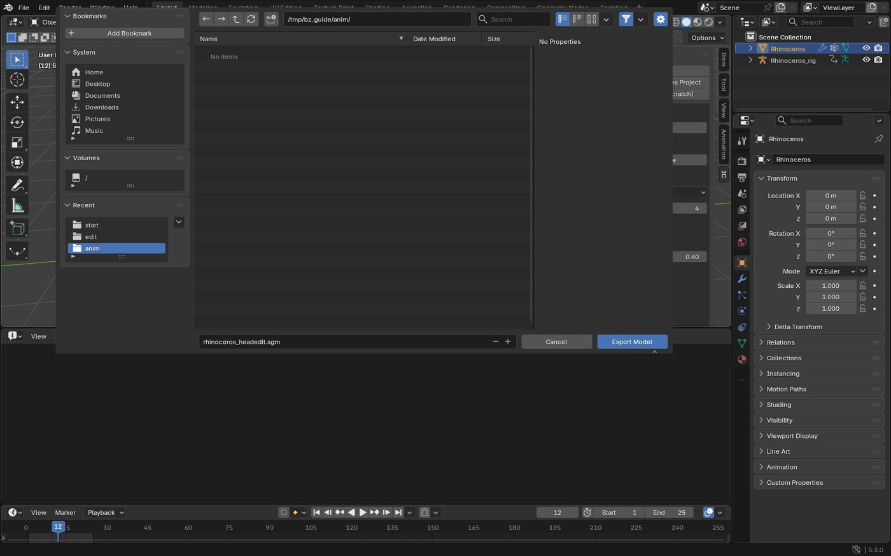
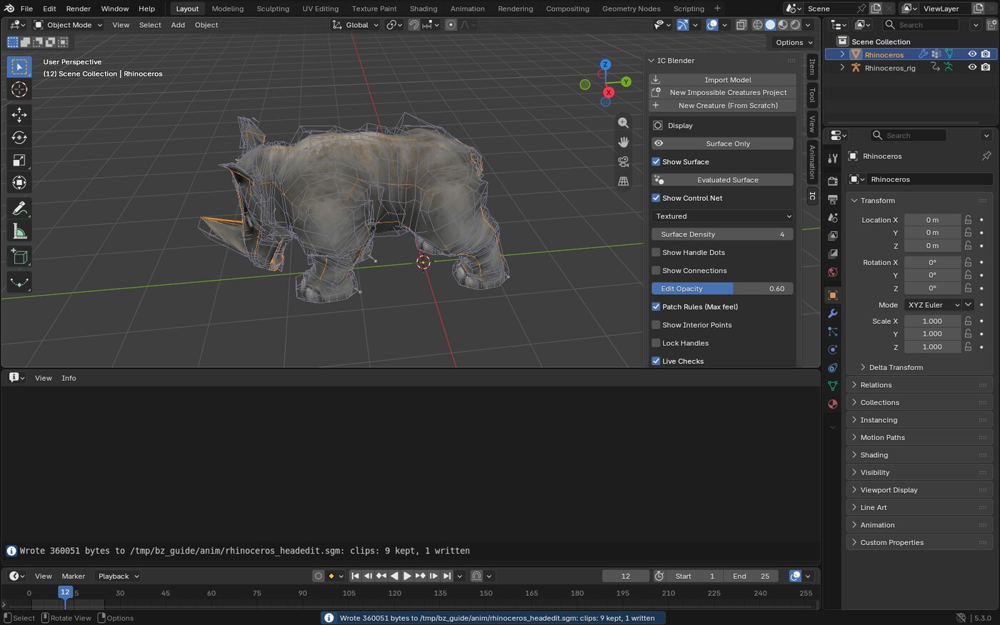
Creating a new clip
- Press Select Rig, enter Pose Mode, click New in the Action Editor and name the Action.
- Set the frame range (for example 1 to 21) and a frame rate of 30.
- Key the rest pose at the start, pose and key a middle frame, and key the rest pose at the end so it loops.
- Keep the Action active, select the creature and press Export Model. The clip takes the Action's name and frame range.

Renaming and deleting clips
- Rename the Action, not the NLA track or strip, to rename the clip.
- Delete a clip in the Outliner: Blender File > Actions > right-click > Delete.
- Unlinking the Action or deleting its NLA track does not drop an imported clip.
Validate (will it load?) lists missing clips and export warnings before you write.
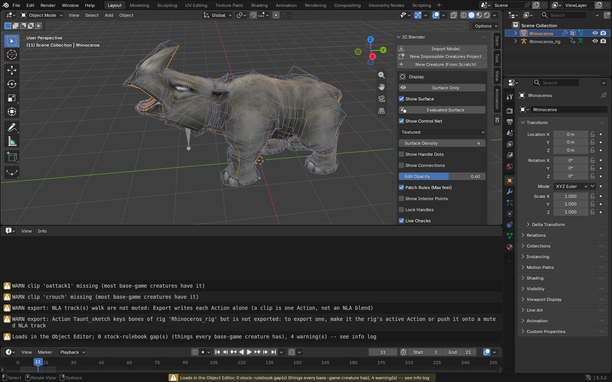


Rules the engine imposes (and the add-on follows)
- A bone with no keys in a clip stays at rest under its parent.
- One Action is one clip. NLA blending isn't exported; mute unmuted tracks to silence the warning.
- Keys on a missing bone are left out, with a warning. Rename bones with Boner > Bones > Rename Bone, which updates Actions.
- Actions left over from an earlier rig are ignored, with a warning.
Bones, limbs and connections (Boner)
A creature loads in the Object Editor when its patches are watertight and rigged. To combine in the game, its limbs, connections and skeleton must also follow the rules of the combiner (ComboTest.exe). Edit them in the IC tab under Boner: Bones | Limbs | Connections. Every edit can be undone, and a refused edit changes nothing.
The model in one minute
- Limbs are named groups of patches, each with a class and a bone list. A class combines Side, Position, Plane and Type; Non-Swappable parts stay with their torso.
- A limb other than the Torso is a root bone and its descendants. The Torso owns every other bone.
- Stub limbs have one bone and no patches, so the creature can still receive wings or arms. The Object Editor requires the leg, arm and wing classes.
- Connections are the sockets where limbs are grafted. Each has a Parent class (usually Torso), a Child class, a host bone in the parent limb, and a ring of corners (6 for head or tail, otherwise 4).
- The game finds bones by standard names (
pelvis,spine1,neck1,head,tail1,front_leg1_land so on). - ComboTest.exe refuses a creature with a limb class that has no connection, a Left limb without its Right mirror, or a limb with no bones.
Setting up
- Use IC Blender > Import Model on
rhinoceros.sgmand widen the sidebar. - In Display, tick Show Connections.
- Open Boner and choose Limbs. With Follow Shading on, the shading switches to By Limb.

Boner > Limbs
Each row shows the limb's name, class, patches, bones and status; problems are red. Click a name to select it.
- Rename: a unique name of up to 63 ASCII characters.
- Class boxes: ticking one clears the others in its group. Non-Swappable stands alone.
- Select Bones selects the limb's bones on the rig (visible in Pose or Edit Mode). The Bone field shows which limb a bone is in.
- Set Root Bone gives the limb a bone and its children. It is for rigs with their own root bones; stock creatures refuse other roots.
- Add Active Bone moves the chosen bone into this limb. Remove Active Bone leaves it in no limb. You are warned if this strands points.

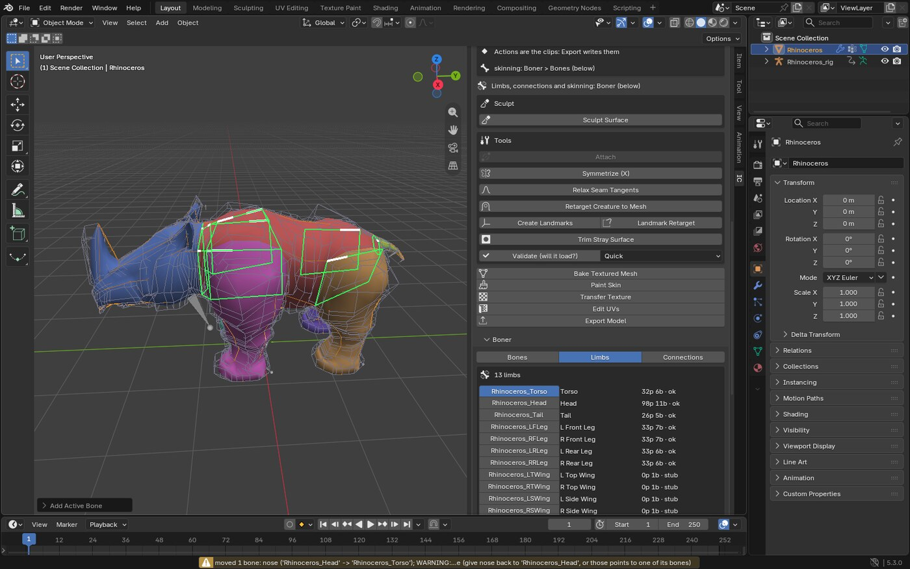
nose to
the Torso raises a warning.
- Add Standard adds a missing standard limb as a stub. Its root bone must exist. For front legs, rear legs, wings and arms, use Add Stub Socket, which can create the bone.
- Delete asks where the patches go and leaves the bones in no limb. You can't delete or untick a class that a connection still needs, or untick the Torso.
- In Edit Mode, Select Limb and Assign Selected to Limb select and move patches.
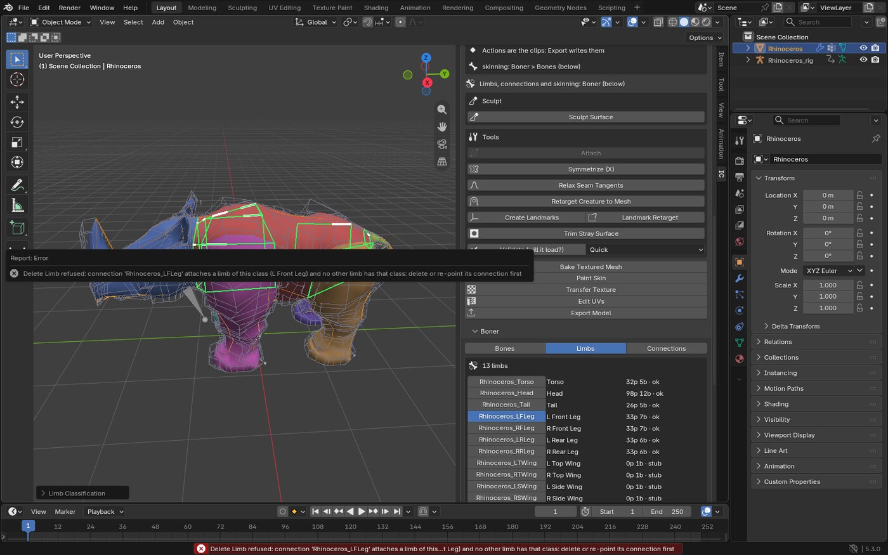
Boner > Connections
Each row shows Parent > Child class, corners (picked / wanted), host bone and status. Click a row to highlight its ring.
- Rename or Delete. A limb left without a connection is refused by ComboTest.exe.
- Parent / Child chooses which class the boxes edit. A Child class that another connection already has shows as duplicate.
- Host bone: choose one and press Set, or press Default. It must belong to the parent limb.
- Create for Limb makes a missing connection. Then pick its ring.
- Pick Ring (Edit Mode): click the corners along patch sides; the ring closes by itself. Backspace steps back, Esc cancels. Or Shift+click the corners in order and press From Selection.
- Optimise Start / All Rings: see below.
Optimise Ring Start: where the weld begins
The combiner welds two rings corner by corner from each ring's first corner. A wrong start twists the seam.
- Optimise Start tries every start for the active ring and keeps the one that welds best with stock creatures.
- The report shows the improvement and how far the worst corner moves.
- An already good ring is refused. All Rings does the whole creature in one undo step.
- It never reverses a ring, but reports when a reversed one would weld better.


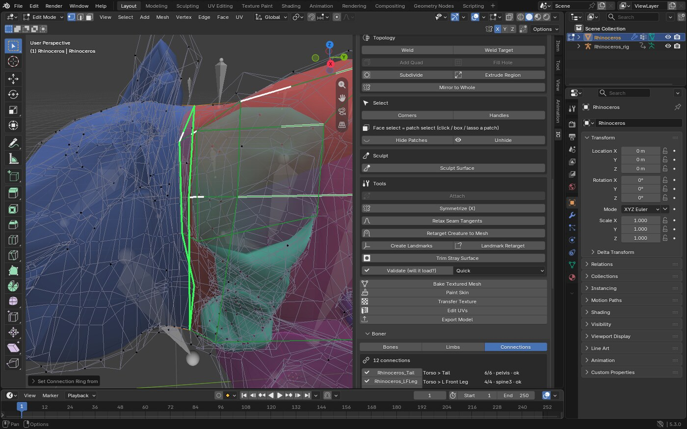
Add Stub Socket: a class the creature does not model
Without arm stubs, for example, a creature can't take arms, and the Object Editor warns Required limb class not found. Add Stub Socket adds the stub limb and its connection.
- In Edit Mode select the 4 corners of one Torso patch (such as a shoulder for arms, or the back for wings).
- Choose a missing class, for example Add Stub Socket > LFArm. The bone, ring and host bone are set up for you.
- Add the other side too.

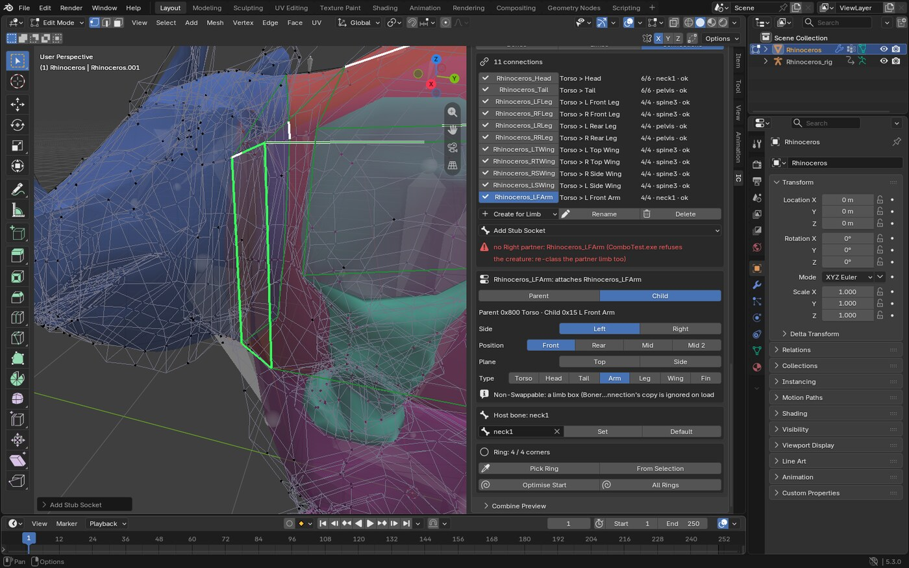
Boner > Bones: renaming, adding, deleting and re-parenting bones
This tab also holds the skinning tools (see the skinning chapter).
- Rename Bone (pencil next to Bone, or Blender's F2). Use a unique name of up to 63 ASCII characters; references and Actions follow. Renaming a bone the game looks up is allowed but warned. To reuse another bone's old name, export and re-import first.

- Add Bone under Active: choose the parent in Bone, then give a name, offset and length. Skin points to it with Assign Selected.
- Adopt Added Bones (import icon) takes in bones made with Blender's tools. Chains and copied bones with children need it; a single new leaf is exported without it.

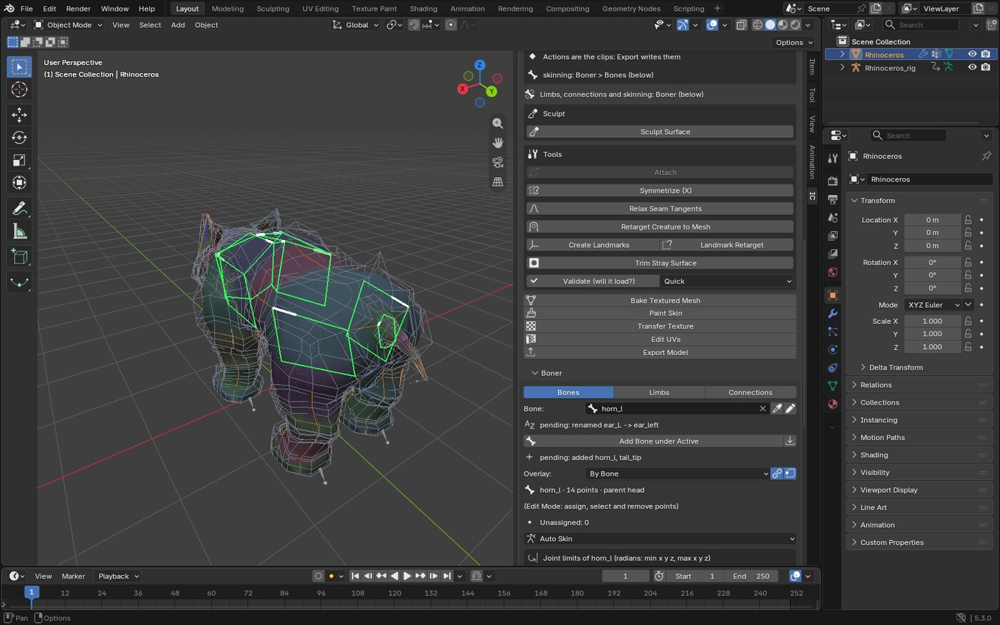
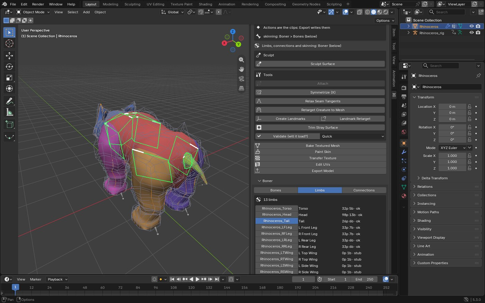
An added bone always belongs to its parent's limb; re-parent it to move it.

Deleting and re-parenting the creature's own bones
Use X and Ctrl+P in the rig's Edit Mode, or the Outliner.
- Deleting a bone gives its points and children to its parent, and removes it from limbs, IK chains and clips.
- Re-parenting keeps the bone's rest position and its animation.

You can't delete the root, bones the game looks up by name, stub bones, host bones or a limb's only bone. You can't move the root, make a second root, put a bone under a stub, or split a limb other than the Torso.

tail1 can't
be deleted.Joint limits and IK chains
- Joint limits: each rig bone's
bz_joint_limitsproperty, in radians. Reset to Stock restores it. - IK chains: Add IK Chain, edit, remove or reset them. A chain must be one line of bones.
- No game tool has been seen to use either in play.
Validate, Combine Preview and the Quick combine tier
Validate (will it load?), with Combine Checks: Quick (default), reports:
- problems that block loading;
STOCK: things every base-game creature has but yours lacks;WARN: advice;COMBINE: trial combinations with stock creatures. ACOMBINE ERRORmeans ComboTest.exe fails on your creature.
- To try it, break a creature: tick Mid on LFLeg only, delete the LFArm connection, and remove
nosefrom the Head. - Press Validate (will it load?) and read the lines in an Info editor.
- Open Combine Preview, choose a stock donor and press Preview. It stops at the first refusal. Validate Combines runs only the quick combine checks.


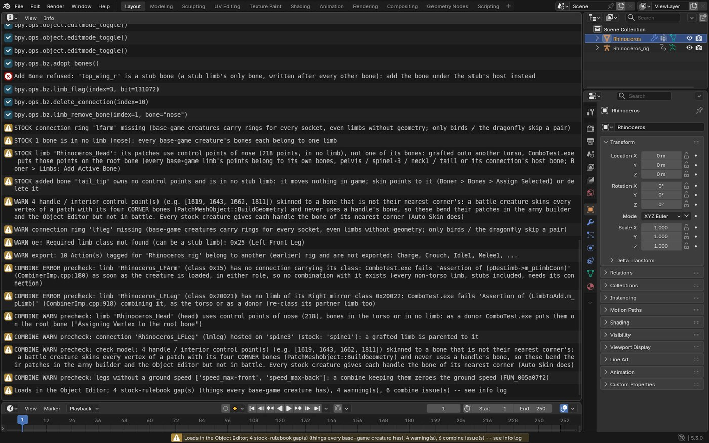
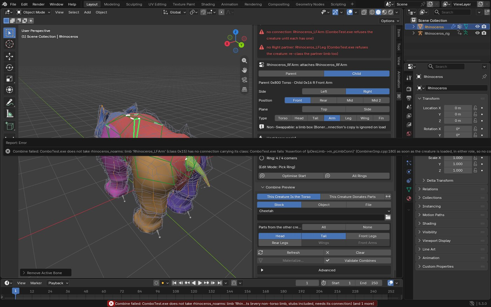
Gatherers, characters, structures and props
Anything that isn't a combiner animal is a scene object: henchmen, characters, buildings, scenery. Its
.sgm holds mesh parts, usually with a skeleton and clips. Its .ebp blueprint sits
beside it.
Starting a project
The game can't load a scene object built from nothing, so you start from a copy.
- Use File > New > Impossible Creatures Project..., or New Impossible Creatures Project in the IC tab.
- Set Type to Gatherer / character or Structure / prop.
- In Start from, pick a stock model or Another .sgm file.... If no stock models
are listed, set the Game folder in the add-on's preferences, or set
IC_INSTALLand restart Blender. - Set Animations to Keep its own or None.
- Choose a folder of your own and a file name, and confirm. The model and blueprint are copied there and opened.
Opening one
- Use File > Import > Impossible Creatures Model (.sgm / .ebp), or Import Model in the IC tab.
- Keep Clips as Actions on to edit animations.
- If textures are reported missing, set the Game folder.
What you are looking at
- One mesh object per part, at full detail, with the game's textures.
- A
<name>_rigarmature if there is a skeleton, with vertex groups named after its bones. - Clips as Actions: use Load Animation and Select Rig.
- In the IC tab: model info, the rig box, export buttons and the Blueprint panel.
Editing the mesh
Edit a part in Edit Mode with any mesh tool. These are exported:
- moved, added or deleted geometry, including extrude and subdivide;
- UVs, seams and flat shading;
- bone weights (an unweighted vertex goes to the root bone);
- moving faces to another of the model's own materials.
Warnings:
- Join new pieces into a part (Ctrl+J). Separate objects aren't exported.
- Don't delete a part object: its original shape is exported.
- Moving, rotating or scaling a part in Object Mode isn't exported.
Exporting
- Press Export Scene Object (.sgm) for geometry and clips (needs a rig), or Export Scene Geometry (.sgm) for geometry only.
- Keep Let the engine rebuild the detail ladder on. Off is untested in game.
- Only changed parts are rebuilt. Read the report and any warnings.
- A part holds at most 12,288 vertices, counted after splitting at UV seams and flat faces. If refused, reduce detail (for example with a Decimate modifier, applied).
- Editing a part with damage states is refused unless you tick Drop the damage states of edited parts, which removes them.
- This writes only the
.sgm. For a folder with the blueprint too, use Export Entity Folder (next chapter).
The Blueprint panel
A scene object's .ebp blueprint sets its kind, name, footprint, offset and sounds. The
Blueprint panel in the IC tab appears when the model's part, rig or group empty is
active.
Loading the blueprint
- Select the model and press Load Blueprint. The status box lists your edits; Reset discards them.
- If there is no
.ebp, press Start a New Blueprint. A new one has no motion tree or events, so the game won't play the model's animations.
What the panel shows
| Box | What to set |
|---|---|
| Name | The in-game name, up to 255 letters. Codes like $41545 come from the
language files. |
| Kind of thing | Kind and Class number: what the game makes of the model. |
| Footprint and offset | X, Z: path cells a building blocks (buildings only; 2 game units each; 0 and 0 measures the model). Offset moves the model on its footprint (Y raises it). |
| Sounds | Sounds to preload, one per line, like
DATA:AUDIO\SPECIALFX\STRUCTURES\WOODBIND.PAT. Missing files are skipped silently. |
| Where the game finds it | The folder under Data/art/ebps/. Check it if the
panel calls it a guess. |
Gameplay numbers (read only) shows speed, health, cost and so on. A thing with a new name gets its kind's default numbers.
Export Entity Folder
- Press Export Entity Folder.... Set File name and Folder in the game.
- Choose an empty folder of your own. Game and Steam folders are refused.
- Press Export Entity Folder. It writes the
.sgmand.ebpunderData/art/ebps/, and aREADME.txt.
- Edited parts with damage states need Drop the damage states of edited parts ticked.
- Textures and the stats file aren't included.
Trying it in the game
- Use a copy of the game that you own, never the Steam folder.
- Merge the exported
Datafolder into that copy's main folder. Loose files override packed ones. - Start the game. To undo, delete the two files. If something is missing, check
warnings.log.
- A new name appears only where a map or script asks for it.
- To replace a stock thing, export under its exact folder and name.
Maps and scenarios
Open a map (.sgb), change its ground, water, textures and placed things, and save it. You can also start
new maps, paint, script and replay cinematics.
- Nothing saved has been tested in the game. The newer tools (new map, painting, scripting, cinematics, files, lists, crop) are also untried in the Mission Editor.
- The free 3D view is the mirror image of the game's. Cut-scene, preview and replay cameras show the game's picture.
- Texture stamps made with 0.8.0 or earlier are mirrored north to south in the game.
Opening a map
- Use File > Import > Impossible Creatures Map from the Game... for the game's maps, or Impossible Creatures Map (.sgb) for a file.
- Four options start on: Placed models, Water, Creatures and Game look. Turn them off for a quicker import.
If the game isn't found, set the Game folder in the add-on's preferences.
What you get
- A collection named after the map, sorted into terrain, water, structures, nature, units and other.
- Terrain: one mesh at real size, with its ground textures.
- Water: a surface wherever water lies above the ground.
- Placed things: models, or named empties where no model can be shown. Each keeps its blueprint, owner and groups.
- Creatures: real models, including combined ones, without animation.
- Game look: sun, sky, ground picture, water, border, decals and fog. It is never saved. Toggle it with Show game look / Remove game look; remove it to see ground textures plainly.
The report
The status bar sums up the import. The text Map import <name> in the Text Editor lists what was placed and why anything is an empty.
The Map panel
In the sidebar's IC tab (N), the Map panel shows the map's size, object counts and source, with a folding part for each tool.
Changing the ground and the water
- Ground: sculpt it, or move its points in Edit Mode. Only heights are saved. Don't add, remove, join or rearrange points: the save is refused. Undo or reopen the map.
- Steps: heights are rounded to steps (usually 0.5 m, sometimes 0.4 m) and limited to 0-255 steps. The save report counts changes.
- Water: move the water surface up or down; ponds with their own height stay. Use Add water... if there is none; saving then sets the map's water level. Press Redraw water after moving it, or after sculpting a map larger than 257 x 257 points.
Painting ground textures
In Ground textures, select terrain faces in Edit Mode and press a material's Use on selected faces. Add ground texture... adds one from the game. Each block of 8 x 8 cells takes the texture most of its faces have; a tie changes nothing.
Moving, copying, adding and deleting placed things
- Move (G), turn (R) or delete (X) objects as usual.
- Copy with Shift+D or Alt+D.
- Add object at the 3D cursor... places a game blueprint.
- Use Set owner of the selected... and Drop selected to the ground as needed.
- Scale is ignored.
- Copies of creatures combined inside the map are left out.
Checking and saving
- In Save, Check my changes lists what a save would change.
- Save Map..., or File > Export > Impossible Creatures Map (.sgb), writes the map and its companion files (triggers, dialogue, pictures) to a folder.
- Save ready-to-drop folder... writes
Data/scenarios/mp(orsp) with aREADME.txton installing into a copy of the game. Name it with lower-case letters, digits and underscores.
- Game and Steam folders are refused. So is the original file, unless you tick Replace the original file.
- Read the text Map save <name> for cautions.
The pathfinding
The map stores where units can walk. Choose Pathfinding in the save dialog:
- Update when needed (default): updates where ground or blocking objects changed.
- Rebuild like the game: rebuilds all of it.
- Leave as it is: units walk as on the old ground.
First test in game: can a unit walk across what you changed?
Making a new map
File > New > Impossible Creatures Map asks for a name, ground, size, kind and players. Keep Give each player a start on for a lab and three henchmen each. The game folder is required.
- Map settings changes name, kind and players. Make preview picture makes the map list's pictures.
- Terrain look sets light, sky, sea, water brightness, fog and the fine ground texture. The game ignores the sea colour.
- Press Check map before saving. Map problems lists missing or blocked starts and broken script references; Locate selects one.
Save with Save ready-to-drop folder.... The game lists a multiplayer map only for 2 to 6 players.
Painting the map
- Passability: Paint blocked (red) or Paint open (green), or select faces in Edit Mode and press Block, Open or Clear.
- Overlays: shows where units can go. Press the entry again to refresh. Not saved.
- Terrain types set footstep sounds. Paint them, or set selected points.
- Water levels: select points, then Water at a height... or Dry the selected points.
- Decals: Edit decals (make handles), change the handles, then Redraw decals on the ground. Add decal at the 3D cursor... adds one.
- Blend tiles add soft edges between ground textures.
- Texture stamping: Stamp at the 3D cursor... paints a decal into the ground picture. The game shows stamps only at its highest ground detail.
Scripting the map
- Groups and variables: select objects and press + to make a group.
- Triggers: make a trigger, say who runs it, and add conditions and actions with + (type to search).
- Dialog triggers and AI scripts and armies cover the other Mission Editor tools.
- Check the scripts finds references to deleted objects, groups or text.
- Saving writes your changes into the map and its
.trgand.dlgfiles.
Cinematics
In Cinematics, each animation is a collection with an empty per key frame. Move keys and change
their values, then press Preview and drag the timeline. Add animations with New
Camera, New Object or New Move (New Camera Animation on a
map without cinematics). Triggers use the animation's number. Saving writes the .na file. The game's path may bend slightly differently.
Watching a cinematic (Replay)
Replay acts out a cinematic with the map's trigger script.
- Open Cinematics > Replay and press Find the cinematics.
- Pick one, press Build replay, then Look through the camera.
- Press Space in the 3D view.
- Event list marks each event exact, approximate or skipped.
- Clear replay brings back your objects, camera and frame range. A replay never changes the map.
- Import with Placed models on to see labs, characters and props animate. Placed creatures stay still.
- Walking, timing after speech, random countdowns and the camera's first blend are approximate.
- Effects, random wandering and groups filled from your units during play are skipped. Dialogue isn't drawn, and there is no sound.
- Replays haven't been compared with the game.
Height maps, terrain and entity files, lists and crop
- File > Import and Export handle Height Map (.tga), Terrain (.ter) and Entities (.ent). A same-size terrain replaces ground, sky and sea values; entities are added.
- Object list filters placed things to select, hide or delete. Blueprint list counts how often each blueprint is used.
- Terrain crop: pick a size, place the 3D cursor and press Validate to see what would be lost. Crop! builds a smaller map and hides the old one. Crop anyway overrides problems.